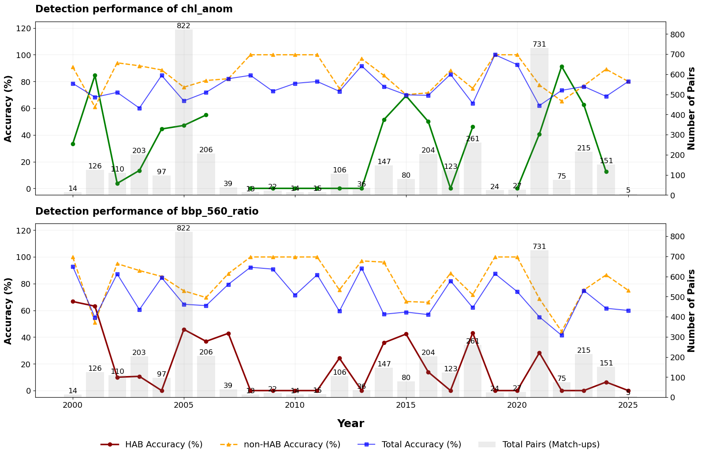
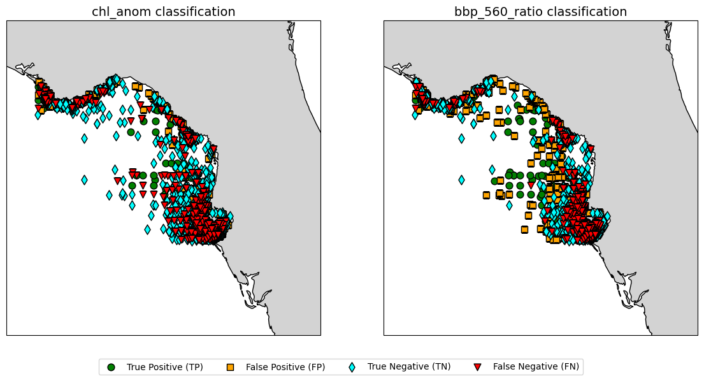

1.6.1. Validation of ocean colour observations for harmful algal bloom application#
Production Date: 15-11-2025
Produced by: Chiara Volta (ENEA, Italy)
🌍 Use case: Detection of harmful algal bloom#
❓ Quality assessment question#
How well do ocean colour observations detect Karenia brevis harmful bloom on the West Florida Shelf?
The Ocean Colour dataset version 6.0, distributed by the Copernicus Climate Change Service (C3S), includes two variables: the chlorophyll-a mass concentration (chlor_a) and the remote sensing reflectance (Rrs) at six visible wavelengths, from October 1997 to the present [1].
Ocean colour observations have long supported the detection of algal blooms, enabling broader and more frequent coverage than in situ sampling [2] [3]. Moreover, as harmful algal blooms (HABs) are expected to increase in frequency, intensity and duration due to both climatic and non-climatic drivers (e.g., increasing temperature, higher nutrient inputs from river runoff) [4], these observations are increasingly valuable for environmental monitoring and decision-making.
Here, the goal is to evaluate how accurately the Ocean Colour products can identify the HABs of Karenia brevis (K. brevis), a toxic dinoflagellate responsible for severe ecological and economic damage on the West Florida Shelf (WFS) [5] [6] [7].
📢 Quality assessment statement#
These are the key outcomes of this assessment
The Ocean Colour dataset version 6.0 enables the calculation of two satellite-derived indicators for Karenia brevis detection on the West Florida Shelf: chlorophyll anomaly (chl_anom) and particulate backscattering ratio at 560 nm (bbp_560_ratio).
The satellite-derived indicators maintain stable performance from 2000 to 2024, with an average total accuracy above 63% relative to in situ observations, confirming the dataset as a robust tool for long-term monitoring.
The two indicators show different sensitivities to bloom conditions: chl_anom provides the highest HAB detection accuracy, whereas bbp_560_ratio is more susceptible to interference from non-algal particles in coastal waters.
While both satellite-derived indicators generally agree, particularly in identifying non-bloom conditions, disagreements occur when optical signals are weak or optical coastal complexity is high.
Combining the two satellite-derived indicators reduces false positive blooms and improves the overall accuracy, but increases missed detections (false negative) by excluding bloom identified by only a single indicator, illustrating the limitations of fixed thresholds.
📋 Methodology#
This notebook assesses of the ability of the Ocean Colour dataset version 6.0 to identify the HABs of K. brevis on the WFS over a 25-year period (2000-2024). Following the approaches described in [8] and [9], chlor_a and Rrs at 560 nm data are used to derive two satellite-derived indicators: chlorophyll-a concentration anomaly (chl_anom) and total particulate backscattering ratio at 560 nm (bbp_560_ratio). To validate these indicators, satellite pixels are compared with in situ K. brevis cell concentrations obtained from the Florida Fish and Wildlife Conservation Commission (FWC) Open Data portal, allowing each pixel to be classified as either HAB or non-HAB. Accuracy metrics are calculated for each indicator individually to determine their sensitivity to bloom conditions, as well as for a combined approach in which a HAB is flagged only when both indicators are simultaneously triggered. An inter-algorithm analysis is also performed to quantify the agreement/disagreement between the indicators in detecting the same biological signal. In addition, the stabilty of the detection performance of the two indicators is examined across the 25-year period to evaluate the consistency of the dataset over time. Finally, the spatial patterns of the indicators are analysed to evaluate how the optical complexity of the region influences the detection accuracy of each indicator.
The analysis and results are detailed in the sections below:
1. Set up the code and choose the satellite data to use
Import libraries
Setup of satellite data request
2. Data retrieval and filtering
Retrieval and filtering of satellite data
Download and extraction of in situ K. brevis cell concentrations
3. Satellite and in situ data pairing, and calculation of satellite-derived HAB indicators
Satellite-in situ data match-up
Computation of satellite-derived indicators of K. brevis HABs
4. Accuracy computation and results organisation
Accuracy calculation
Results organisation for visualisation
5. Display and discuss results
Display results
Discussion
📈 Analysis and results#
1. Set up the code and choose the satellite data to use#
Import libraries#
Besides the standard libraries used for managing and visualising multidimensional arrays, the C3S EQC custom function c3s_eqc_automatic_quality_control is imported to retrieve satellite data. The requests module is used to download and manage observed K. brevis cell concentrations from the FWC website, while the confusion_matrix is used to quantify the accuracy of satellite-derived HAB/non-HAB flags against in situ observations, and to evaluate agreement between the two satellite-derived indicators.
Setup of satellite data request#
The analysis in this notebook uses chlor_a and Rrs_560 nm data acquired over the WFS over 25 years (2000-2024). The data request is configured to also retrieve data from 1999 in order to provide the two-month baseline required to calculate the chl_anom, which is defined relative to a period ending two weeks before each in situ observed HAB event (see ‘Computation of satellite-derived indicators of K. brevis HABs’ section below).
2. Data retrieval and filtering#
Retrieval and filtering of satellite data#
The regionalised_filtred_data function is defined and applied to retrieve chlor_a and Rrs_560 data from the region of interest. Only chlor_a values within the valid range of 0.01–100 mg m-3 are downloaded [10]. All satellite data are merged in a single array.
Download and extraction of in situ K. brevis cell concentrations#
In situ data are retrieved from the FWC Open Data portal, which provides laboratory-analysed K. brevis cell concentrations from offshore and inshore water samples collected since 1953. As sampling efforts increased substantially after the year 2000, only data from 2000 to 2024 are downloaded and used in the analysis. Additionally, downloaded data are restricted to samples collected over the WFS at depths shallower than 2 m. Despite the progressive increase in the number of samples, observations remain sparse in time and space and are typically collected during K. brevis bloom periods (from late summer through winter [9]) or in response to severe HAB events. Additional details on sampling and monitoring protocols are available on the FWC HAB monitoring webpage (see “Further readings” below).
3. Satellite and in situ data pairing, and calculation of satellite-derived HAB indicators#
Satellite-in situ data match-up#
The extract_hab_pairs_final function is defined to resolve the mismatch in scale between discrete in situ samples and continuous satellite imagery, ensuring that the extracted satellite data accurately represent the sampled K. brevis concentrations.
First, a spatio-temporal binning is applied by averaging all in situ samples collected within the same 0.04°x0.04° grid cell on a single day to produce a single representative data point. This step ensures that the biological ground-truth corresponds to the spatial resolution of the Ocean Colour product ([1] [11]). Next, the match-up procedure pairs the nearest satellite pixel within a maximum distance of 4 km from each averaged in situ location, ensuring that each binned in situ observation is paired with its closest satellite data. The pairing is further constrained to a \(\pm7\)-day temporal window, following [11]. This window is ecologically relevant given the typical multi-day persistence and slow-growing nature of K. brevis blooms ([12][13]), thereby minimizing the impact of water-mass movement and/or bloom evolution. The resulting dataset contains only the coupled satellite–in situ pairs and is used for subsequent calculations of HAB indicators and accuracy.
Computation of satellite-derived indicators of K. brevis HABs#
Two satellite-derived K. brevis HAB indicators are computed for each satellite-in situ pair: chl_anom and bbp_560_ratio.
The function get_dynamic_baseline is defined to calculate the mean chlor_a from the nearest satellite pixel to the in situ sampling location over a 2-month period ending 2 weeks before the sampling date, and the chl_anom is calculated by subtracting this baseline from the chlor_a observed on the date of the pair, following [8]. Note that chlor_a averages are computed using log-transformed daily data, and then unlogged [14].
The bbp_560_ratio is computed by adapting the equation for bbp ratio at 555 nm from [9]. This approach relies on the same assumption made by [9], namely that the difference between Rrs at 555 nm and Rrs at 560 nm is negligible, and is motivated by the fact that Rrs at 555 nm is not available in the Ocean Colour dataset. The bbp_560_ratio is calculated as: \((-0.00182+2.058⋅Rrs\_560)/((0.3⋅chl^{0.62})⋅(0.002+0.02⋅(0.5-0.25⋅log_{10}chl)))\), where Rrs_560 and chl are the satellite data corresponding to each satellite-in situ pair.
4. Accuracy computation and results organisation#
Accuracy calculation#
Before the accuracy calculation, each satellite-in situ pair is classified as HAB or non-HAB using the thresholds suggested by [9]: an in situ sample is considered a K. brevis HAB if cell concentration is equal to or greater than 100000 cells/l, while for the satellite indicators a match-up is considered a K. brevis HAB when chl_anom and bbp_560_ratio are greater than 2 mg m⁻³ and lower than 2, respectively. A combined indicator is also created, identifying a HAB only when both satellite-derived indicators detect it simultaneously.
Accuracy statistics are then calculated using the accuracy_metrics function. The function compares each satellite-derived indicator with in situ observations and extracts the number of true positives (TP) and true negatives (TN), which represent cases where satellite predictions and in situ observations agree; false positives (FP) when blooms are predicted but not observed in situ; and false negatives (FN) when blooms are observed in situ but not predicted. From these values, the function calculates the accuracy of the indicators (in %) in correctly identifying in situ blooms and non-blooms, following [9]. In particular, HAB accuracy is calculated as the proportion of correctly predicted blooms relative to the total number of HAB predicted by the satellite indicator (true and false), whereas non-HAB accuracy is the ratio between the number of correctly detected non-HAB cases and the total number of non-HAB cases identified by the satellite indicator. The overall accuracy, defined as the proportion of all correct predictions (positive and negative) relative to the total number of in situ observations, is also calculated.
Furthermore, a cross-comparison is performed to evaluate the consistency between the two satellite algorithms. For this analysis, chl_anom is treated as the reference against which the bbp_560_ratio is tested. Here, the agreement (in %) is defined as the proportion of the total observations where both methods simultaneously identify a HAB (positive agreement) or a non-HAB (negative agreement). Conversely, the disagreement represents cases where the two indicators yield conflicting classifications, whereas the overall agreement is calculated as the proportion of all co-occurring detections (positive and negative) relative to the total number of observations.
Result organisation for visualisation#
Accuracy metrics are organized into three dataframes to facilitate their visualisation (see ‘Display results’ section below): one for the counts of correct and incorrect detections (TP, TN, FP, FN) across the chl_anom, bbp_560_ratio, and combined indicators; one for the derived accuracies in identifying HAB and non-HAB events; and one for the agreement and disagreement rates between the two satellite algorithms. Additionally, each satellite-in situ pair is labelled by its classification category to enable the spatial mapping of detection performance for each satellite indicator.
5. Display and discuss results#
Display results#
Table 1 summarises the counts of true positives (TP), true negatives (TN), false positive (FP) and false negative (FN), as well as the total correctly and incorrectly classified observations detected by the chl_anom, bb_560_ratio and their combination (i.e., both indicators have to be simultaneously satisfied; see ‘Accuracy calculation’ section above), as well as the total number of paired satellite-in situ observations. Table 2 presents the accuracy metrics derived from these counts, reporting the performance of each satellite indicator and their combination as the percentage of correctly identified HABs and non-HABs, along with total accuracy. Table 3 details the inter-algorithm agreement, showing the counts and percentages of concordant and discordant detections between the two satellite indicators. Annual time series plots for each indicator, displaying the annual HAB, non-HAB and total accuracy alongside with the total number of satellite-in situ match-ups (grey bars), are also provided to evaluate their temporal consistency. Finally, two maps are displayed to visually assess the spatial performance of each indicator. Here, coloured markers are used to indicate TP (green), FP (orange), TN (cyan) and FN (red).
Table 1: Satellite-in situ match-up counts
| Satellite-derived indicator (counts): | |||
|---|---|---|---|
| chl_anom | bbp_560_ratio | Combined (AND) | |
| True Positive (TP) | 468 | 352 | 188 |
| True Negative (TN) | 2200 | 2117 | 2527 |
| False Positive (FP) | 631 | 714 | 304 |
| False Negative (FN) | 567 | 683 | 847 |
| Correctly Classified | 2668 | 2469 | 2715 |
| Incorrectly Classified | 1198 | 1397 | 1151 |
| Total | 3866 | 3866 | 3866 |
Table 2: Accuracy Percentage Comparison
| HAB Accuracy (%) | non-HAB Accuracy (%) | Total Accuracy (%) | |
|---|---|---|---|
| Indicator | |||
| chl_anom | 42.6% | 79.5% | 69.0% |
| bbp_560_ratio | 33.0% | 75.6% | 63.9% |
| Combined (AND) | 38.2% | 74.9% | 70.2% |
Table 3: Inter-Algorithm Agreement (chl_anom vs. bbp_560_ratio)
| Agreement type | Count | Percentage (%) |
|---|---|---|
| Agreement (HAB) | 492 | 12.7% |
| Agreement (no-HAB) | 2193 | 56.7% |
| Disagreement (chl_anom: HAB, bbp_560_ratio: no-HAB) | 607 | 15.7% |
| Disagreement (chl_anom: no-HAB, bbp_560_ratio: HAB) | 574 | 14.8% |
| Overall Agreement | 2685 | 69.5% |


Discussion#
Performance of individual satellite indicators#
According to Table 1 and Table 2, chl_anom emerges as the most sensitive individual satellite indicator, achieving the highest HAB detection accuracy (42.6%) and a total accuracy of 69.0%. While it correctly identifies 468 true positive cases, the results reveal a significant number of false positives (613) and false negatives (567). These errors suggest that although chl_anom is a useful indicator for bloom conditions, the application of a fixed threshold applied over two decades may not fully account for the natural baseline variability in the region, often flagging non-HAB biomass or missing lower-density blooms.
The bbp_560_ratio shows relatively lower overall performance, with a total accuracy of 63.9%. It also has the lowest HAB detection accuracy among the tested methods (33.0%)and produces the highest number of both false positives and false negatives (714 and 683, respectively). This indicates that the optical signature of bbp_560_ratio, intended to highlight the low-backscattering nature of K. brevis [9], is frequently confounded by other marine constituents. In the optically complex waters of the WFS, non-algal particles (e.g., suspended sediments) and co-occurring phytoplaknton species likely mask the specific backscattering signal of K. brevis [9], leading both to false alarms when non-HAB particles mimic the specific backscattering ratio and to missed detections when the K. brevis signal is not optically dominant.
Temporal stability of detection performance#
As shown in the annual performance time series, the total accuracy of both satellite-derived indicators remains rather stable across the 25-year period analysed, despite significant inter-annual variability in the number of available match-ups. This indicates a stable temporal behaviour in the Ocean Colour dataset, which provides consistent results despite the use of successive generations of satellite sensors [1], and suggests that the dataset is well suited for long-term monitoring in the region.
The analysis also indicates that chl_anom acts as a more conservative indicator that bbp_560_ratio. Indeed, the time series show that during certain years (e.g., 2007, 2019), the chl_anom ramains below the detection threshold (2 mg m-3), while the bbp_560_ratio continues to trigger. This demonstrates that chl_anom effectively prioritises high-confident detection, as also indicated by the fewer false alarms produced compared to the bbp_560_ratio (Table 1).
Agreement between satellite indicators#
To determine whether the two different physical signals (i.e., chl concentration and particle backscattering) converge on the same biological signal over the long term, the agreement between the two satellite indicators is examined. Results summarised in Table 3 indicate an overall agreement of 69.5%, which suggests that the algorithms largely detect the same bloom-related optical signals across different sensor technologies and varying environmental conditions. Most of this agreement is driven by the dominance of clear-water conditions (56.7%), confirming the ability of the dataset in identifying non-HAB conditions (Tables 1 and 2). The active bloom agreement (12.7%) highlights the most robust detections, where the K. brevis signal is strong enough to trigger both indicators simultaneously. These cases therefore represent the highest-confidence satellite detections in the records. Results also indicate that the two indicators diverge in the 30.5% of the cases. This decoupling likely reflects biological processes (e.g., vertical migration [11]) and/or the presence of optically active constituents (e.g., suspended matter; [9]), which modify the pigment-to-backscattering ratio. Additionally, a threshold effect likely contributes to this disagreement. Indeed, when a bloom falls below the detection limit of one indicator, the other may still detect it. These decoupled cases highlight the complementary nature of the two indicators and suggest that relying on a single indicator would result in missing nearly a third of the biological activity detected when both indicators are active.
Spatial patterns of detection performance#
The variations in algorithm performance are closely linked to the geographical characteristics of the study area. As shown in the maps, true negatives are predominantly located offshore, whereas classification errors cluster along the coastline. This spatial distribution suggests that the optical complexity in nearshore waters, driven by suspended sediments and non-algal particles, influences both indicators compared to offshore regions. While both indicators struggle with false negatives along the coast, the bbp_560_ratio exhibits a higher susceptibility to false positives in these areas. This further indicates that while bbp_560_ratio is sensitive to backscattering particles, it lacks the specificity of chl_anom in distinguishing K. brevis from other suspended solids in shallow, turbid waters. Ultimately, this spatial divergence also confirms that the disagreement between the two indicators is geographically driven, reinforcing the need for an integrated approach to address this optically complex region.
Implication of the combined detection approach#
The optical interference and signal divergence observed in nearshore waters directly influence the performance of the “Combined (AND)” detection strategy (Tables 1 and 2). By requiring both indicators to trigger simultaneously, this strategy acts as a high-precision filter, achieving the highest total accuracy (70.2%) and reducing false positives to their lowest level (304). However, because it only accepts the 12.7% of cases where both algorithms agree on a HAB (Table 3), it inherently ignores the 30.5% of the data where the signals diverge. This results in the highest number of false negatives (847) and a HAB detection accuracy of only 38.2%. While effective for high-confidence confirmation, the “AND” logic overlooks the transitional or optically complex phases of a bloom where only one indicator is dominant.
Overall, this 25-year assessment shows that satellite indicators derived from the Ocean Colour dataset provide a valuable long-term monitoring tool for detecting K. brevis blooms on the West Florida Shelf. Ocean colour observations can detect K. brevis blooms with moderate accuracy, although performance varies between indicators and is reduced in optically complex nearshore waters. However, the reliance on static thresholds limits the ability of these indicators to capture the full spectrum of bloom conditions. Future improvements may involve the use of hyperspectral satellite data to develop species- or region-specific algorithms, and/or the application of machine-learning approaches that integrate multiple optical and environmental variables [15] [16].
ℹ️ If you want to know more#
Key resources#
CDS catalogue entry used in this notebook is the Ocean colour daily data from 1997 to present derived from satellite observations
Data download is from CDS
Product Documentation is available on the CDS website
Code libraries used:
C3S EQC custom functions,
c3s_eqc_automatic_quality_control, prepared by B-Open
Further readings:
Ocean Colour Monitoring Portals: CMEMS, ESA-GlobColour Project, ESA-OC-CCI, ESA-Sentinel 3, IMOS, NASA, NOAA CoastWatch.
Groom, S., et al. (2019). Satellite Ocean Colour: Current Status and Future Perspective. Frontiers in Marine Science, 6.
IOCCG (2021). Observation of Harmful Algal Blooms with Ocean Colour Radiometry. Bernard, S., et al. (eds.), IOCCG Report Series, No. 20, International Ocean Colour Coordinating Group, Darthmouth, Canada.
References#
[1] Jackson, T., et al. (2023). C3S Ocean Colour Version 6.0: Product User Guide and Specification. Issue 1.1. E.U. Copernicus Climate Change Service. Document ref. WP2-FDDP-2022-04_C3S2-Lot3_PUGS-of-v6.0-OceanColour-product.
[2] Stumpf, R.P., et al. (2007). Remote Sensing of Harmful Algal Blooms. In: Miller, R.L., et al. (eds.) Remote Sensing of Coastal Aquatic Environments. Remote Sensing and Digital Image Processing, vol. 7. Springer, Dordrecht, pp. 277-296.
[3] Caballero, C.B., et al. (2025). The need for advancing algal bloom forecasting using remote sensing and modeling: Progress and future directions. Ecological Indicators, 172.
[4] Bindoff, N.L., et al. (2019). Changing Ocean, Marine Ecosystems, and Dependent Communities. In: IPCC Special Report on the Ocean and Cryosphere in a Changing Climate. H.-O. Pörtner, et al. (eds.). Cambridge University Press, Cambridge, UK and New York, NY, USA, pp. 447-587.
[5] Pierce, R.H., and Henry, M.S. (2008). Harmful algal toxins of the Florida red tide (Karenia Brevis): natural chemical stressors in South Florida coastal ecosystems. Ecotoxicology 17, pp. 623-631.
[6] Béchard, A. (2020). Economics losses to fishery and seafood related businesses during harmful algal blooms. Fisheries Research, 230.
[7] Alvarez, S., et al. (2024). Non-linear impacts of harmful algae blooms on the coastal tourism economy. Journal of Environmental Management, 351.
[8] Stumpf, R.P., et al. (2003). Monitoring Karenia brevis blooms in the Gulf of Mexico using satellite ocean colour imagery and other data. Harmful Algae, 2(2), pp. 147-160.
[9] Tomlinson, M.C., et al. (2009). An evaluation of remote sensing techniques for enhanced detection of the toxic dinoflagellate, Karenia brevis. Remote Sensing of Environment, 113(3), 598-609.
[10] Sathyendranath, S., et al. (2019). An Ocean-Colour time series for use in climate studies: the experience of the Ocean-Colour Climate Change Initiative (OC-CCI). Sensors, 19, 4285.
[11] Hu, C., et al. (2022). Karenia Brevis bloom patterns on the west Florida shelf between 2003 and 2019: Integration of Field and satellite observations. Harmful Algae, 17, 102289.
[12] Vargo, G.A. (2009). A brief summary of the physiology and ecology of Karenia brevis Davis (g. Hansen and Moestrup comb. nov.) red tides on the West Florida Shelf and of hypotheses posed for their initiation, growth, maintenance, and termination. Harmful Algae, 8(4), 573-584.
[13] Stumpf, R.P., et al. (2022). Quantifying Karenia brevis bloom severity and respiratory irritation impact along the shoreline of Southwest Florida. PLoS ONE, 17(1), e0260755.
[14] Campbell, J.W. (1995). The lognormal distribution as a model for bio-optical variability in the sea. Journal of Geophysical Research, 100, 13237-13254.
[15] Arias, F., et al. (2025). Mapping Harmful Algae Blooms: The Potential of Hyperspectral Imaging Technologies. Remote Sensing, 17(4), 608.
[16] Izadi, M., et al. (2021). A Remote Sensing and Machine Learning-Based Approach to Forecast the Onset of Harmful Algal Bloom. Remote Sensing, 13(19), 3863.